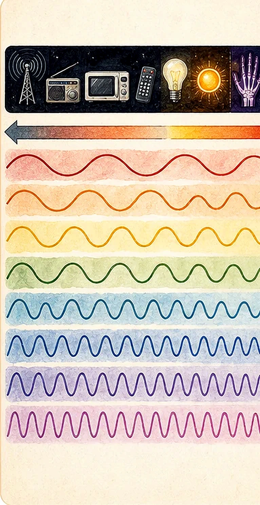
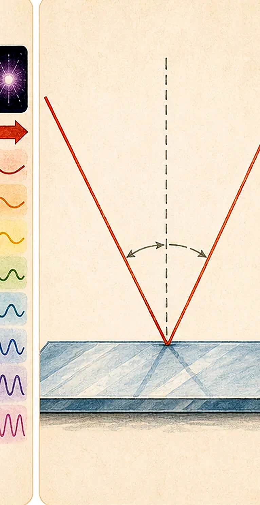
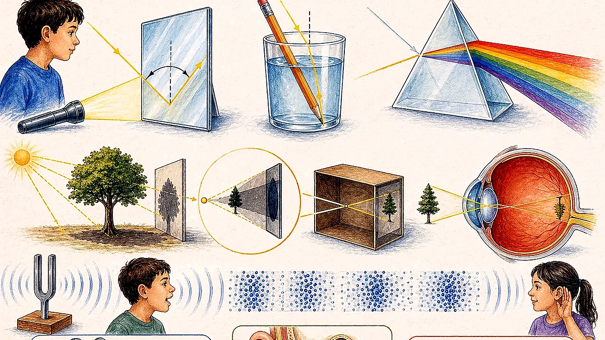
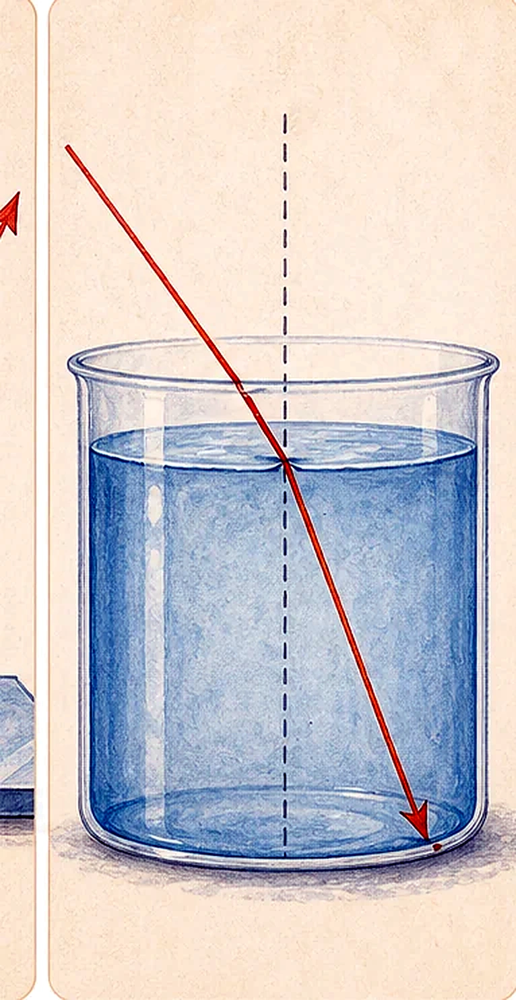
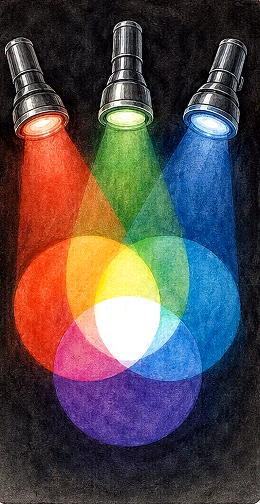
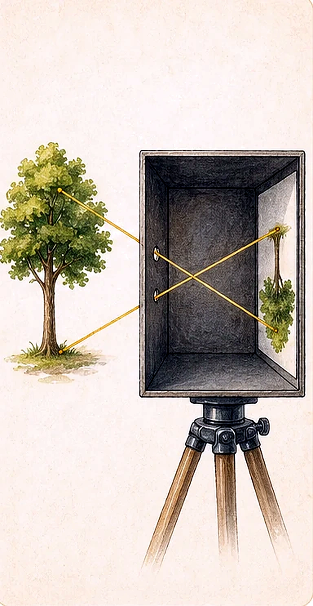

What Is Light?
Light is a form of energy that we need to see things. It is non-matter: it has no mass and does not occupy space.

Light energy from the sun, called solar energy, can be changed into electrical energy and heat energy for households.
We see an object when it is a light source or when it reflects light from a light source into our eyes.
Light travels in straight lines. Each straight path is a light ray; many rays form a light beam.
| Property From The Scan | Meaning |
|---|---|
| Light travels at about 3.0 x 108 m/s in vacuum. | The exact vacuum speed is 299,792,458 m/s. |
| Light can be blocked. | Opaque objects prevent light from passing through and can form shadows. |
| Light can be reflected and transmitted. | Surfaces can bounce light; transparent objects allow light through. |
| Light carries energy. | Energy can be absorbed and transformed, such as warming a surface. |
| Light has wave-particle duality. | It behaves like a wave in many optics problems and as photons in energy transfer. |
| Light waves can have different wavelengths. | Different wavelengths correspond to different colours and parts of the electromagnetic spectrum. |
Electromagnetic Spectrum
The electromagnetic spectrum is the range of electromagnetic radiation, from low-frequency radio waves to high-frequency gamma rays. Higher-frequency waves have shorter wavelengths and more energetic photons.

When Light Falls On An Object
When a light ray travels and falls on a surface, it may be transmitted, reflected, absorbed, scattered, or refracted. Reflection makes many objects visible.
Light passes through the object.
Light is reflected in an orderly way.
Light is absorbed or blocked.
Light is scattered in many directions.
Law of reflection
The angle of incidence equals the angle of reflection.
thetai = thetar
- The normal is an imaginary line perpendicular to the mirror surface.
- The angle is measured from the ray to the normal, not to the mirror.
- A plane mirror forms a virtual image that appears behind the mirror.

Mirror Applications
The scan uses periscopes, convex mirrors, and concave mirrors to show how reflection is useful.

An instrument for observing over, around, or through an obstacle that prevents direct line-of-sight observation from the current position.
Used as side mirrors in vehicles because it forms smaller images and lets the driver view a wider area behind.
Used in a solar furnace because it focuses sunlight onto a point, increasing temperature at that point.
Refraction, Apparent Depth, And Total Internal Reflection
Refraction is the change in direction of a wave caused by a change in wave speed when it passes between transparent media, such as air and water.
Snell's law
sin(theta1) / sin(theta2) = n2 / n1 = v1 / v2
Higher refractive index usually means light travels more slowly in that medium and bends more strongly at an interface.
- Vacuum: refractive index 1.
- Helium: about 1.000036.
- Water: about 1.30.
- 30% sugar solution: about 1.38.
- Typical glass: about 1.5.
- Diamond: about 2.4.

An object in water appears higher, or shallower, than the real object because light refracts at the water-air boundary.
When light tries to move from a denser medium to a less dense medium beyond the critical angle, no light refracts out.
Water: 48.6 degrees. Glass: 41.8 degrees. Diamond: 24.5 degrees.
Primary Colours Of Light And Vision
Pigment mixing from art class uses red, yellow, and blue. Light mixing is different: red, green, and blue are the primary colours of light.

- Red, blue, and green can be mixed in different proportions to form other colours, even white.
- Two primary colours form secondary colours of light: yellow, cyan, and magenta.
- The human eye perceives colour using three types of photoreceptor cells sensitive to long, medium, and short wavelengths.
- Pure yellow light is physically different from a mixture of red and green light, but both can be perceived as yellow.
Eye structures shown in the scan: cornea, pupil, iris, lens, ciliary body, sclera, choroid, retina, optic nerve, rods, and cones.
Shadows And Pinhole Cameras
A shadow forms because light travels in straight lines and can be blocked. If the screen does not move and the object moves closer to the light source, the shadow becomes larger.
The innermost and darkest part of a shadow.
The region where only part of the light source is obscured.
Pinhole camera
A pinhole camera is a simple camera without a lens but with a tiny aperture. It is effectively a light-proof box with a small hole in one side.
- The image is inverted because rays from the top and bottom of the object cross at the pinhole.
- Moving the camera closer to the object gives a larger image.

Sound Waves
Sound waves can be described as sinusoidal plane waves with frequency, wavelength, amplitude, pressure or intensity, speed, and direction.

Frequency is how often waves pass per second. Wavelength is the distance between repeating points such as compressions.
Larger amplitude usually means louder sound because pressure variation is greater.
Density and structure of the medium determine sound speed. The scan orders speed as gas < liquid < solid.
| Medium Or Range | Value From The Scan |
|---|---|
| Fresh water | About 1,482 m/s. |
| Steel | About 5,960 m/s. |
| Air | About 340 m/s in the handwritten note. |
| Human hearing range | About 20 Hz to 20,000 Hz. |
| Ultrasound | Above 20,000 Hz; not audible to humans. |
| Infrasound | Below 20 Hz; not audible to humans. |
| Elephants | Can detect sounds as low as about 14 to 16 Hz and as high as 12,000 Hz. |
| Dogs | Approximate range 40 Hz to 60,000 Hz, depending on breed and age. |
| Bat calls | Usually ultrasonic, about 20 to 200 kHz. |